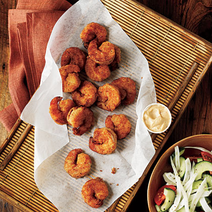

Pan-Fried Shrimp with Creole Mayonnaise

Try this way of cooking shrimp and your guests will love them
Serve a lighter version of fried shrimp with a creamy Creole dipping sauce. Fresh, seasonal veggies make the perfect accompaniment for this 15-minute dinner.
Ingredients
- 2¼ ounces all-purpose flour (about 1/2 cup)
- 1¼ teaspoons salt-free Creole seasoning (such as Tony Chachere's), divided
- ⅛ teaspoon salt
- ¼ cup fat-free milk
- ¾ cup dry breadcrumbs
- 1½ pounds peeled and deveined large shrimp
- 3 tablespoons olive oil, divided
- 2 tablespoons canola mayonnaise
- 1 teaspoon Worcestershire sauce
- ¼ teaspoon hot sauce
Steps
- Combine flour, 1 teaspoon Creole seasoning, and salt in a shallow dish. Pour milk into a shallow dish. Place breadcrumbs in a shallow dish. Dredge shrimp in flour mixture; dip in milk. Dredge shrimp in breadcrumbs; shake off excess breading.
- Heat a large nonstick skillet over medium-high heat. Add 1 1/2 tablespoons oil to pan; swirl to coat. Add half of shrimp; cook 2 minutes on each side or until done. Repeat procedure with remaining oil and shrimp.
- Combine mayonnaise, remaining Creole seasoning, Worcestershire, and hot sauce in a small bowl; stir with a whisk. Serve Creole mayonnaise with shrimp.
- Sustainable Choice: Buy U.S. or Canadian wild-caught or farmed shrimp for the best sustainable option
Home